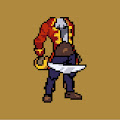 PunkBodies PunkBodies是艺术家设计和机器生成的基于以太坊区块链的身体像素艺术图像，与现有的 CryptoPunks 相得益彰。有 10,000 具尸体，每具尸体都与现存的每一个朋克
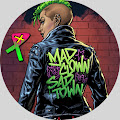 PUNKS: Origin Stories 在他们聚集在一起让不可替代的粉丝们惊叹之前，朋克们过着自己的生活，直到他们被召唤到 web3 中唯一的地方：起源城！ 跟随 Origin Stories，这是一部纯数
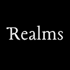 Realms (for Adventurers) 永远只有 8000 个战利品领域，每个战利品 ID 1 个。 目前有 7175/8000 个 Realms 和 2,072 个唯一所有者（截至 2022 年 8 月 4 日 - 每月更新）。 Bibliotheca x Realms 正在 L2 StarkNet 上为 Realm Lords & Ladies 构建 MMOC
Redacted Remilio Babies Remilio Maker 是男孩的 Milady。 以Ulenka 的 艺术为 特色， “Remilionaire”的领导， Yayo Corporation 的咨询 ，以及Charlotte Fang的实习生
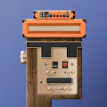 Relic Punks “Relic Punks”是 Metarelics 为您带来的第一个官方 Relic Reserves 收藏，由 Jeff Cole 创作。 朋克是对过去重要文化技术的 36 件作品。该系列使用怀旧来带回我们与消费设备
Relics Pass Relics Pass 由IKONICK& Sneaks of Nature的联合创始人 Jeff Cole 和 Mark Brazil 带给您。Pass 是 IKONICK 的核心 持有 Relics Pass 将授予您一个免费薄荷和一个折扣薄荷到 Sneaks
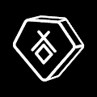 RELICS Season 1 收集和展示文物。每个 RELIC 都包含来自 Monstercat 电子音乐家名单的独特视觉和完整歌曲。 拥有您最喜欢的艺术家的时刻。 您的遗物将在 Metaverses 中解锁独特的互动。即将与 Ja
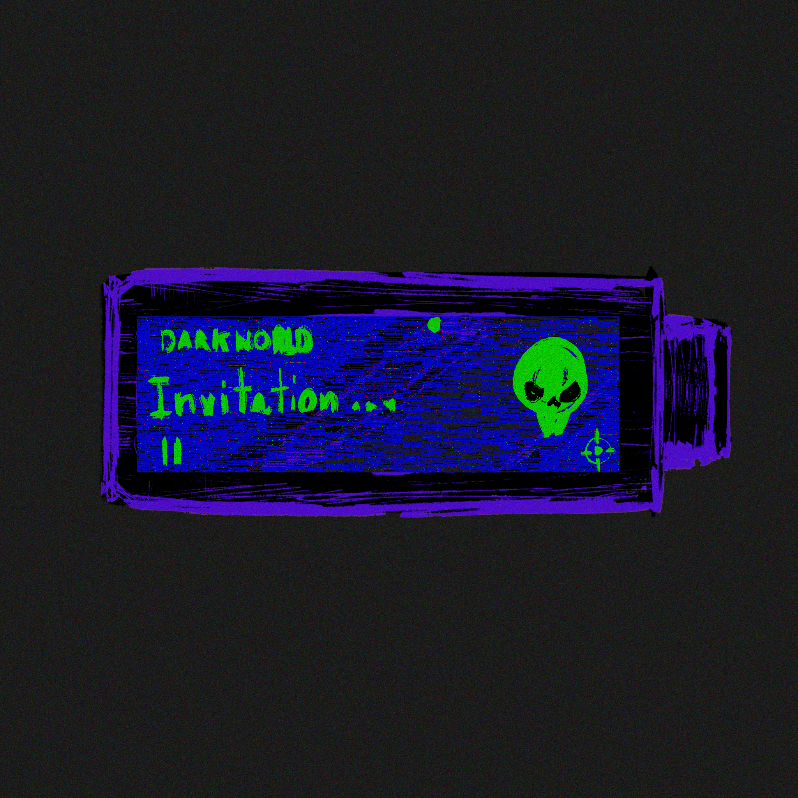 remikz secret lab ▶ 什么是 remikz 秘密实验室？ remikz 秘密实验室是一个 NFT（不可替代令牌）集合。存储在区块链上的数字艺术品集合。 ▶ 存在多少 remikz 秘密实验室代币？ 总共有 6 个 remikz
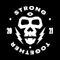 REMIX! Mint Club 混音！专供所有 REMIX 使用的代币！持有人。 混音！代币提供了对 APE DAO 团队和周围一些最具创意的 NFT 艺术家为您带来的最新项目的独家访问权。立即购买，有机会铸
Rengoku Legends [Samurai] Rengoku Legends 是一个完全可定制的武士集合，具有视觉和音乐稀有性、机制和实用性。每个武士都将由每个持有者创建和定制。这个创世纪系列将成为由社区推动的身临
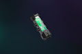 RTFKT SKIN VIAL: EVO X RTFKT Skin Vials 允许您更改 RTFKT x NIKE DUNK GENESIS CRYPTOKICKS 或任何兼容 CRYPTOKICKS 与限量版皮肤的外观。RTFKT 的第一个 Skin Vial Tech 系列 EVO X 具有 8 个基于 Clone X DNA 的进化皮肤请阅读：因为区块链是
Sherbet NFTs 果子露 NFT NFT - 常见问题 (FAQ) ▶ 什么是果子露 NFT？ Sherbet NFTs 是一个 NFT（不可替代代币）集合。存储在区块链上的数字艺术品集合。 ▶ 存在多少 Sherbet NFT 代币？ 总共有
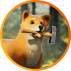 SHIB YARD SHIB YARD more_horiz Shib : Metaverse 是我们作为一个社区的历史的顶峰，它以美丽的视觉效果、虚拟土地的独家集合虚拟展示，展示了我们的创新和团结，以及一个真正称之为家的地
Shiba Social Club Official Collection 特征 欢迎来到BABY SHIBA 社交俱乐部 Baby Shiba Social Club 是我们最新的系列，出售 5000 个 Baby Shiba NFT！ 我们利用我们的经验为您带来了更多具有近 200 种特征的独特角色。 这将
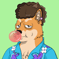 Shiba Society Shiba Society 为柴犬爱好者收集了 2000 个算法生成的 2D 化身。共有超过 9 个属性的 240 个属性，没有两个头像是相同的。加入社区，交易和分享你的SHIBBY，发布Sh
SHISOKA NFT Collection Official Cory Van Lew 的 Mike Tyson NFT 系列 Mike Tyson NFT 系列是限量版 NFT 系列，旨在庆祝地球上最坏的人 Mike Tyson 的标志性生活和遗产。每个 NFT 都是 Mike Tyson 和新兴艺术家 Cory Van Lew 之间的独特合作。M
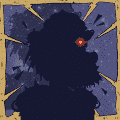 ShitBeast ShitBeast 统计数据 创建于 3 个月前，10,000 代币供应，OpenSea 验证集合，7.5% 费用 ShitBeast NFT 在过去 7 天内售出 500 次。ShitBeast 的总销售额为
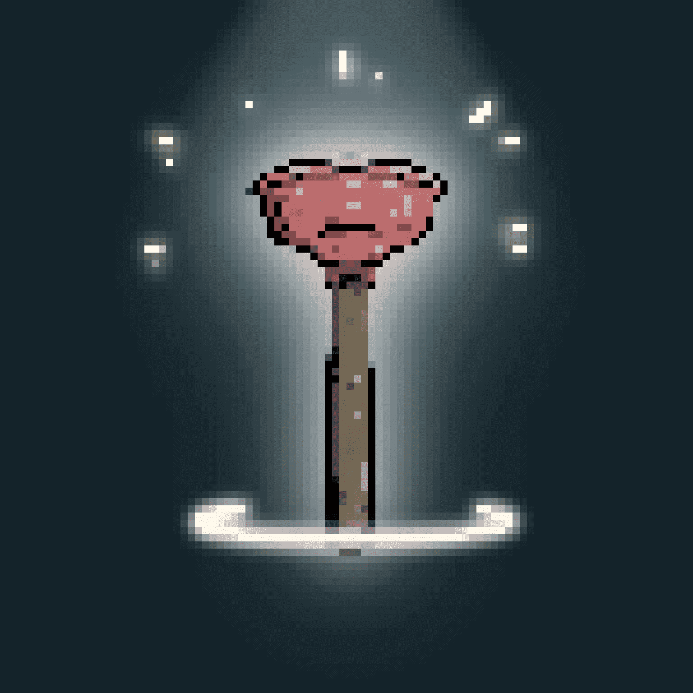 ShitPlunger ShitPlunger 统计数据 创建于 3 个月前，1 代币供应，OpenSea 验证集合，7.5% 费用 ShitPlunger NFT 在过去 7 天内售出 50 次。ShitPlunger 的总销售额为 7.15 万美
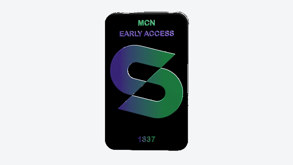 Shopaverse Early Access Pass Shopaverse 抢先体验通行证 拥有 Shopaverse™ Early Access Pass 是您前往 Metaverse Commerce Network 的目的地购物场所 Shopaverse 的门票。凭此通行证，您可以提前进入场地，享受 Shopaverse 商家提供的特别
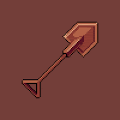 SHOVELS 什么是铲子？ ANON，你说你的砾石需要一把铲子？ 好吧，铲子就在这里。 SHOVELS 是以太坊区块链上 5000 NFTS 的集合。 每铲 NFT 是 0.03 ETH 到 MINT。 您一次最多可以铸造
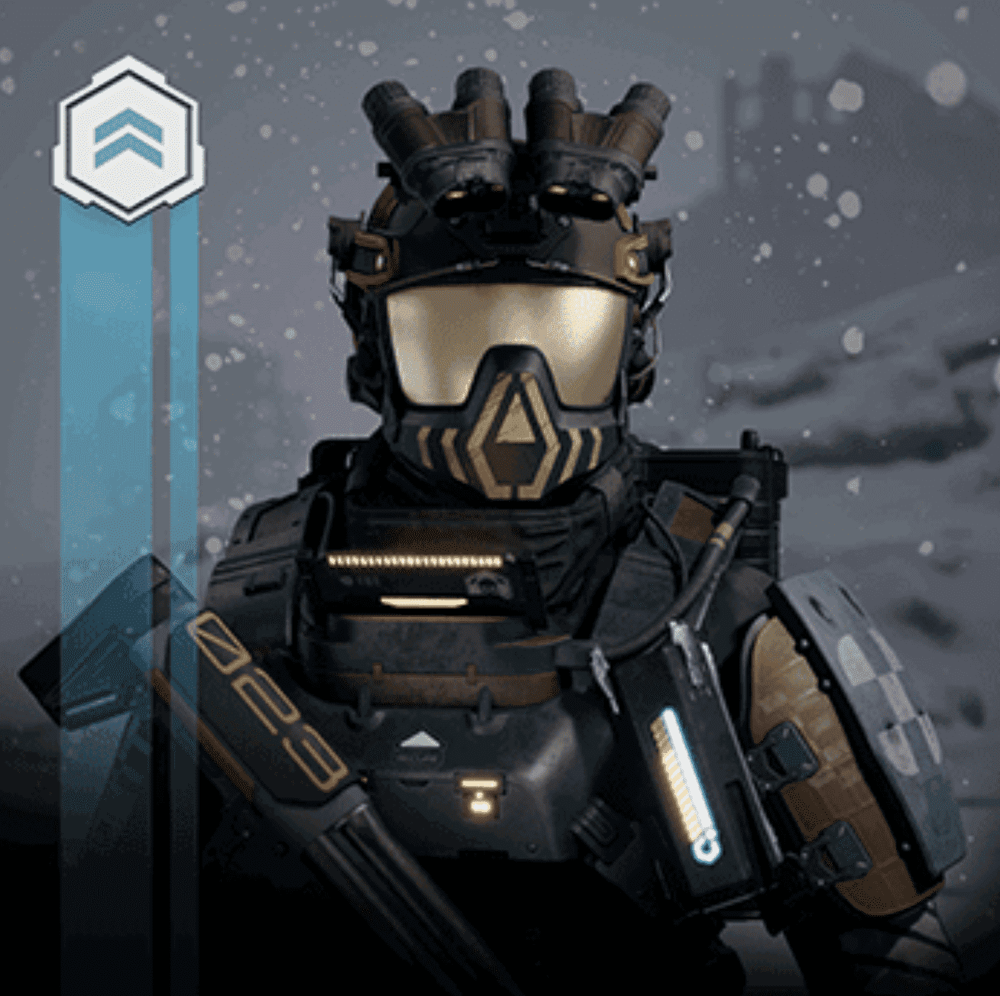 Shrapnel Operators Collection Mint 弹片操作员收藏薄荷 在此处查看完整系列：[https ://opensea.io/collection/shrapnel-operators-collection] 操作员代表 Shrapnel 即将推出的独立漫画系列中的 5 个角色。每个角色都有自己的故事，在目前正在制作的
Shroom Folk 蘑菇民谣 [潜伏蘑菇民俗] [Lurk Loves You]的 Shroom Folk 很久以前，有一个孤独的老太空巫师。当他飘过银河系时，他会散发出魔法孢子来传播他的魔法天赋。他的创作
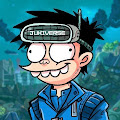 Si Juki: Lost in Jukiverse Si Juki是Faza Meonk于2010年创作的印尼流行漫画人物。司巨基的故事最初是在社交媒体上发布的网络漫画，后来以印刷漫画、网络漫画、手
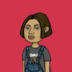 Sicko Univese 西科大学 SICKO_UNIVERSE 是一个以社区为重点的衍生 NFT 集合，包含 9,999 个稀有 Nft。 每个 NFT 都是使用 140 多种属性（如帽子、眼睛、皮肤等等）的组合通过算法生成的！SIC
Sidus NFT Heroes Sidus NFT 英雄 SIDUS NFT Heroes 是 SIDUS HEROES 元节中的原始 NFT 集合。该系列包括由 NFT STARS 和国际现代艺术家集体 NFT256 创建的 6,000 个生成角色。 SIDUS NFT Heroes 系列可作为 SIDUS HEROES 元节的入场券。您可以在
Significant Others Signiscapes - 简介 [Signiscapes]是“[重要他人]”NFT 系列的下一个作品。有了[Peace]的艺术和我的合同 ( [NftDoyler])，我
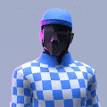 Silks Genesis Avatars Silks 头像是您通往 Silks 虚拟世界的门户，并传达了宝贵的权利和效用。每年有 20,000 匹 IRL 纯种赛马在美国出生，每年争夺超过 10 亿美元的奖金。Silks 将每一个纯种
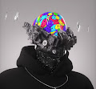 Sixth Reseau Genesis 为我们最大的支持者拍卖的特殊动画 Rèseau Genesis NFT。 持有者将免费获得所有即将到来的官方赛季。 此外，持有者将获得为我们的 Genesis Collection 保留的独家实用程
SixthReseau Lost Identities Lost Identities 是时间的省略，不平衡的尺度，密度的阻力。 SixthRéseau 的第一个官方收藏包含 2000 个作为 RéseauGold 会员通行证的个人化身。 这将
Skanky Skunk Clube 预售实况官方账号认证 OpenSea™NFT 网站 | 不和谐 | Instagram | Twitter NFTSkanky Skunk Club 是一个衍生的 NFT 集合，包含 9,999 个 Rare Nft，以社区为重点。 每个 NFT 都是使用 140 多种
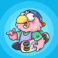 SkaterBirds: Skatepark 这些赃物鸟只是在滑板公园里闲逛。 如果您准备好滑冰，请跳上不和谐。 在我们的成功，失败和里程碑的旅程中，我们总是要感谢我们的早期支持者！ 这些是我
Skeletongues 伤心女孩酒吧 | 悲伤的猫 | CollabsMEET 为 SAD GIRLS HOLDERS 推出的新系列！ SKELETONGUES他们晚上会来到悲伤女孩酒吧，这是唯一值得亲吻的骨头。 Skeletongues — ERC-721 代币在以太
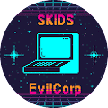 Skids Official Skids 是一个由 8,888 名逃亡的精通技术的黑客组成的乐队，他们生活在这个 90 年代/复古风格的世界中，技术比我们自己的先进得多。 挺身而出对抗 EvilCorp
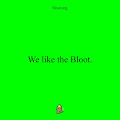 Skill Stats (not for Weaks) 经过73E7F7 基本上是不值钱的。 但如果……怎么办？ 它基本上是毫无价值的。但是，如果…呢？ 技能统计（不适用于弱者） NFT - 常见问题
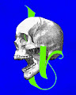 Skoltr, from old Norse. Word meaning: skull. Skoltr，来自古挪威语。 字义：头骨。 人类头骨包含八 (8) 块颅骨和十四 (14) 块面部骨骼。 Skoltr 是由艺术家单独创作的 814 个独特头骨 NFT 的艺术收藏。Skolt
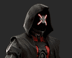 Skorge Alpha Key Skorge Alpha Gang 是一个社区，研究和识别最热门的新 NFT 项目，并与成员分享有关这些项目的信息。 我们进行所有艰苦的工作和研究，以确定高质量项目的关键指标。 这意
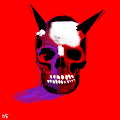 SKULLIES GMI 元宇宙中最新鲜的头骨！ 音乐、艺术、游戏、社区和对生成艺术的全新演绎🎲🎲💀 ProbCause 将有 666 个手绘 1/1 骷髅头。 这些特征是通过对属性图表滚动一对骰子来生成的